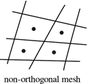
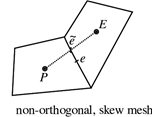

Preface
This handbook is intended to support a medium/advanced OpenFoam® user during the usage of the software. It provides commands, explanations, and extension that we find useful during our CFD workflow, and it is designed to be used by searching for keywords of an action you wish to perform within the OpenFoam® framework. This allows you to enrich or resolve the setting of a problem in the shortest possible time.
How to interpret the text:
| Structure | Meaning |
|---|---|
| Abc | Normal text |
Abc | Shell command |
</Abc/> | User input required |
Installation location
The entire document will assume the installation has been performedunder the
/opt/OpenFOAM/ where there are stored the following files:
.
├── OpenFOAM-v2206
└── ThirdParty-v2206
Intro
OpenFOAM® is classified as free and open-source software, hence everyone can contribute, modify and redistribute the software. The two main distributions of OpenFOAM® actively developed are:
- OpenFOAM® from the OpenFOAM Foundation
- OpenFOAM® by OpenCFD Ltd
These are distributed through two differetn web sites, respectively at:
- https://www.openfoam.org
- https://www.openfoam.com
This book will cover OpenFOAM® by OpenCFD Ltd which does software verison control following the nomenclature:
OpenFOAM-v2112
Which stands for years followed from the month, i.e. 21 stands for year 2021. while 12 for December, hence the software has been released on Dec 21. The release cicle occurs every 6 months.To check the version of OpenFOAM® run, once the sofware is already installed:
foamVersion
What`s the difference between the two main distributions of OpenFOAM®?
OpenFOAM® by OpenCFD Ltd contains more utilities and they optimise more the mesh generation fuctionality.
Installation
The installation of OpenFoam® is possible through three differetn methods:
-
Directly installing the binaries from a packages manager
-
Extracting the already compiled package from the OpenFoam® websites
-
Compiling from the source code
Suggested location in the linux file system
Wheater you do not use a package manger, you must choose where to install the software. It
is advised to create a /opt/OpenFOAM/ directory if you are not backed up by a package
manager to avoid mistakes during future operations or updates. You can create the directory
following:
sudo mkdir -p /opt/OpenFOAM
Where /opt stands for optional software on the GNU-Linux file system.
Commodities
To edit text during local and remote session, a GUI will not be always available.
As a consequence software able to manage text efficiently on terminal are necessary.
It is adivised to deprecate nano and make use of the most advanced tool to edit text.
| Software name | Destination of use | Why |
|---|---|---|
| micro | Dictionary editing | Easy to use and common shortcuts |
| vim | Code editing | Tons extentions and good sintax highlighting |
Install commodities
Debian system will install the software via:
sudo apt install micro vim
Installation via package manger
This is the simplest method to install software in GNU-Linux, however not all GNU-Linux distributions can take advantage of this method. The following GNU-Linux distibution are supported:
- Debian/Ubuntu
- openSUSE
- CentOS/Fedora
To check the description of the package and the dependencies (other software needed to run OpenFoam®) the software needs:
# It shows the information about OpenFOAM® from the OpenFOAM Foundation
apt show openfoam
While to point to the package distributed by the OpenCFD Ltd we must install an additional repository.
# Add the repository
curl https://dl.openfoam.com/add-debian-repo.sh | sudo bash
# Show the info for OpenFOAM® by OpenCFD Ltd
apt show openfoam2206-default
Then install it with super user privileges the package
sudo apt install openfoam2206-default
Then set the binaries/environment variable on the user workspace.
echo "source /usr/lib/openfoam/openfoam2206/OpenFOAM-v2206/etc/bashrc" >> ~/.bashrc
After the installation, it makes the usage of the software more practical adding the tutorial functions to the user space in ~/.bashrc :
echo "source ${WM\_PROJECT\_DIR:?}/bin/tools/RunFunctions" >> ~/.bashrc
source ~/.bashrc
Precompiled binaries download
If the packages are not availble for your distribution, download the precompiled binaries instead:
wget https://dl.openfoam.com/source/v2206/OpenFOAM-v2206.tgz -P /opt/OpenFOAM
wget https://dl.openfoam.com/source/v2206/ThirdParty-v2206.tgz -P /opt/OpenFOAM
These command will download a .tar archive conatining the all necessary file to make the software working on the opt/OpenFOAM directory.
It is advised to use this directory if you are backed up by a package manager to avoid mistakes during future operations or updates.
Next step is to untar these archive with:
cd /opt/OpenFOAM
tar -xvf OpenFOAM-v2206.tgz
tar -xvf ThirdParty-v2206.tgz
Then set the binaries/environment variables on the user workspace:
echo "source /opt/OpenFOAM/OpenFOAM-v2206/etc/bashrc" >> ~/.bashrc
After the installation, it makes the usage of the software more practical adding the tutorial functions to the user space in ~/.bashrc :
echo "source ${WM\_PROJECT\_DIR:?}/bin/tools/RunFunctions" >> ~/.bashrc
source ~/.bashrc
Compiling the source code - x86 architecture
The source code must be compiled in order to be used, it is usually retrieved using git with the command:
git clone https://develop.openfoam.com/Development/openfoam.git /opt/OpenFOAM
git clone https://develop.openfoam.com/Development/ThirdParty-common.git /opt/OpenFOAM
The previous commands will install the source code and the third party
software in the installation directory /otp/OpenFOAM, so the
binaries, libraries, and configuration will be in the same directory.
They will not be separated into different locations as a traditional
UNIX system would have them. To check if your system has an adequate
environment to start the installation run:
echo "source /opt/openfoam/OpenFOAM-v2206/etc/bashrc" >> ~/.bashrc
Check if the dowload was a success:
foamSystemCheck
If the system check did not produced error messages, then OpenFOAM® can
be compiled. This is done by executing the shell script Allwmake to
actually use the make utilities for automating the compilation of c written programme.
./Allwmake.
The installation script takes care of all required operations. Compiling OpenFOAM® can be done by using more than one processor to save time. In order to do this, an environment variable needs to be set before running the script to make the programme
# This export an environment variable to run the compilation in 4 processors
export WM\_NCOMPPROCS =4
./Allwmake > installation.log
Or you can directly use all the avilable cores (using the -j flag) to proceed with the compilation:
./Allwmake -j -s -q -l > installation.log
After the source code has been compiled, makes the usage of the software more practical adding the tutorial function to the user space in ~/.bashrc :
echo "source ${WM\_PROJECT\_DIR:?}/bin/tools/RunFunctions" >> ~/.bashrc
source ~/.bashrc
So, the OpenFoam® commands can be recognized directly in the terminal.
HPC installation
In case of an HPC installation (the following one use an AWS infrastructure with a SLURM scheduler) you can schedule the installation with this shell script
#!/bin/bash
#SBATCH --job-name=OpenFOAM-compilation
#SBATCH --ntasks=36
#SBATCH --output=%x_%j.out
#SBATCH --partition=compute
#SBATCH --constraint=c5n.18xlarge
module load openmpi
source /fsx/openfoam/OpenFOAM-v2012/etc/bashrc
export WM_NCOMPPROCS=36
cd /fsx/OpenFOAM/openfoam/
./Allwmake > installation.log
This script uses 36 cores, correspondent to a 1 nodes since the HPC is composed by nodes called c5n.18xlarge made by 36 cores each. The job should compile in few minutes.
The location of the source code is different because the software is installed on a shared file system for distribution purpose.
Compiling the source code - ARM architecture
If the architecture of your machine differ from x86 such as a Raspberry or
an AWS ARM machine, you need to take few more steps. At first create a file
etc/prefs.sh in the software root directory as shown:
cd /opt/OpenFOAM/OpenFOAM-v2206
echo "WM\_COMPILER=Gcc" > etc/prefs.sh
Then you have to change two files:
./wmake/rules/linuxARM7Gcc/cOpt./wmake/rules/linuxARM7Gcc/c++Opt
Substituting the option -mfloat-abi from softfp into hard as follows:
ls ./wmake/rules/linuxARM7Gcc/cOpt ./wmake/rules/linuxARM7Gcc/c++Opt | xargs sed s/softfp/hard/g
Then set the binaries/environment variables on the user workspace:
echo "source /opt/OpenFOAM/OpenFOAM-v2206/etc/bashrc" >> ~/.bashrc
After the installation, it makes the usage of the software more practical adding the tutorial functions to the user space in ~/.bashrc :
echo "source ${WM\_PROJECT\_DIR:?}/bin/tools/RunFunctions" >> ~/.bashrc
source ~/.bashrc
Then start the compilation with:
./Allwmake -j -s -l
the -j flag tells to the script to use all the available processors.
Case set up
The usual workflows to set up a case is to lay the foundation on similar tutorial. Hence, you need to select an appropriate solver for the problem, a way for listing the application areas is with:
ls $FOAM_SOLVERS
Once it is decided a solver, take a suitable tutorial case, copy it to your working directory.
mkdir -p $FOAM_RUN # if you do not have a working directory
cp -r $FOAM_TUTORIALS/<\tutorial\> $FOAM_RUN
Modify the tutorial, including geometry, meshing and problem setup is crucial and often you need to introduce a dictionary tat was not present in the original turotial file. The following utility will create the dictionary for you:
foamGetDict <\dictionary you want in your case\>
For instance:
foamGetDict topoSetDict
Automation
Being OpenFOAM® a heavily programmable software built in a heavy programmable system, there is the possiblity to automate most of your routine for the usual CFD workflow. Usually three action are taken to automate actions:
- run commands in sequence
- create custom commands
- create script to execute
Execute UNIX commands in sequence
The sequence of commands are a must to learn to be effective on the keyboard.
Command 2 (i.e. snappyHexMesh) will start only if command 1 (blockMesh) has succeeded:
blockMesh && snappyHexMesh
Using the colon ; permit to run command in sequence even if the precedent has failed.
blockMesh; snappyHexMesh
Piping commands using |. Feed the output of command 1 in command 2 as argument, as example:
ls | grep foo
where ls list the files/directory in the current directory and grep will retun the
a list of file which contain a the pattern foo in their name.
Create a custom command
To create a personalized command (alias), if you are using bash as a OS shell like in most of the UNIX like system, do:
echo "alias <\nameCommand\>=’<\list of command you want execute digiting
nameCommand\>" >> ~/.bashrc’
to write at the end of your shell config file the alias you prefer. For example, a useful alias which create a dummy file with the name of the directory and then open ParaView in series is declared as following:
alias paraview_openFoam ='touch "${PWD\#\#\*/}".foam && paraview "${PWD\#\#\*/}".foam
Shell scripting
These are script files, for running all the commands related to the
case. You can open it using any editor and see the commands executed from it.
Taking as example the native bash script often present in tutorial
cases Allrun and Allclean, the follwing command will execute them:
./Allrun
It will run all the command necessary to run the tutorial. While:
./Allclean
It will run all the command necessary to clean the tutorial. To write you bash script, start a new file with the notation:
#!/bin/bash
then followed by the command you want to execute. Elevate the file permission adding execution permission through
chmod +x shellScript.sh
For running your bash script, type:
./shellScript.sh
An example of a bash script to automate a thermal analysis is presented here:
#!/bin/bash
#------------------------------------------------------------------------------
SLURM_NTASKS=16 # Processor number defined here
source ${WM_PROJECT_DIR:?}/bin/tools/RunFunctions # Source run functions
# Remove previous log directory for job monitoring and previous run file
./Allclean
rm -r log;
mkdir log
# Remove all mesh region present in the case
for region in $(foamListRegions)
do
rm -r constant/$region/polyMesh;
done
echo "Eliminated mesh on old regions"
# Mesh generation
restore0Dir
surfaceFeatureExtract > ./log/surfaceFeatureExtract.log 2>&1 && echo "surfaceFeatureExtract Executed/n"
blockMesh > ./log/blockMesh.log 2>&1 && echo "blockMesh Executed"
decomposePar -force > ./log/decomposePar1.log 2>&1 && echo "decomposePar1 Executed"
mpirun -np $SLURM_NTASKS snappyHexMesh -parallel -overwrite > ./log/snappyHexMesh.log 2>&1 && echo "snappyHexMesh Executed"
# Addional mesh zones operation
reconstructParMesh -constant > ./log/reconstructParMesh1 2>&1 && echo "Reconstruct Case"
topoSet > ./log/topoSet && echo "topoSet Executed"
splitMeshRegions -cellZonesOnly -overwrite > ./log/splitMesh.log 2>&1 && echo "splitMeshRegions Executed"
checkMesh > ./log/checkMesh.log 2>&1 && echo "checkMesh Executed"
createBaffles -region PCB -overwrite > ./log/createBaffles 2>&1 && echo "createBaffles Executed"
for region in $(foamListRegions)
do
changeDictionary -region $region > ./log/changeDictionary.$region.log 2>&1
done
echo "changeDictionary Executed"
decomposePar -force -allRegions > ./log/decomposePar2 2>&1 && echo "decomposePar2 Executed"
mpirun -np $SLURM_NTASKS $(getApplication) -parallel > ./log/$(getApplication).log 2>&1 && echo "$(getApplication) Executed"
reconstructParMesh -constant -allRegions > ./log/reconstructParMesh.log 2>&1 && echo "Finished"
#------------------------------------------------------------------------------
Useful command
A list comprised of a brief description of few usuefull UNIX command is given.
grep
It will search word patterns for you in selected documents or a list of them
grep -w -R "foo"
where -w stands for word and -R for research in subdirectories. It will search all the
file names that in which he finds a pattern (in this case: foo).
mmv
Rename more than one file at once, extension included
mmv '\*.STL' '\#1.stl'
tail
To check running simulation written in a log file, it is possible to see in terminal the live writing
tail -f foo.log
sed
For replacing the text repetitively in file stream:
find . -type f | xargs sed -i s/</oldWord/>/</newWord/>/g
Useful usage of the copy utility - cp
To copy a file in different directory, execute:
ls -d processor* | xargs -i cp -r 0.orig/* ./{}/0
Useful usage of find
To find the correct case frame in tutorial
find $FOAM\_TUTORIALS -name controlDict | xargs grep -r foo
Which list controlDict files where the word foo have been found
If you want to know how the continuity errors are computed use find in this way:
$FOAM_SRC –iname *continuity*
and open any of the files.
Run a GUI
Run a GUI file manager from terminal, nautilus is the defult in GNOME
desktop envirnments:
nautilus . &
Instead, dolphin is the default for the KDE desktop environement.
dolphin . &
This will open the file manager in the location you are on the terminal. The
flag & runs the process in background.
Mesh
Mesh in OpenFoam® can be generated using 3 native tools, a combination of those or translated from other programmes such as ANSYS, STAR-CCM ect with few native utilities.
The mesh generators are:
- blockMesh
- blockMesh + snappyHexMesh
- cfMesh
while the principal mesh converter are:
- fluent3DMeshToFoam
- fluentMeshToFoam
blockMesh
First step is to create a dummy folder with the tutorial command:
restore0Dir
blockMesh is a cartesian mesh generators which relies on a single
dictionary located at system/blockMeshDict. The programme starts
executing in terminal:
blockMesh
The mesh will be generated inside the folder constant/polyMesh.
Parameters to control this command is in system/blockMeshDict which
defines the domain through vertices, define the blocks and set the
number of elements in the segment.
Warning: Be consistent – side of different blocks must contain the same number on elements and bias. In blockMesh.boundary, use the rule of the right hand to create the normal to the surface towards the intern of the body.
An example is posted here from the tutorial /opt/OpenFOAM/OpenFOAM-v2206/tutorials/multiphase/interFoam/RAS/damBreak:
FoamFile
{
version 2.0;
format ascii;
class dictionary;
object blockMeshDict;
}
// * * * * * * * * * * * * * * * * * * * * * * * * * * * * * * * * * * * * * //
scale 0.146;
vertices
(
(0 0 0)
(2 0 0)
(2.16438 0 0)
(4 0 0)
(0 0.32876 0)
(2 0.32876 0)
(2.16438 0.32876 0)
(4 0.32876 0)
(0 4 0)
(2 4 0)
(2.16438 4 0)
(4 4 0)
(0 0 0.1)
(2 0 0.1)
(2.16438 0 0.1)
(4 0 0.1)
(0 0.32876 0.1)
(2 0.32876 0.1)
(2.16438 0.32876 0.1)
(4 0.32876 0.1)
(0 4 0.1)
(2 4 0.1)
(2.16438 4 0.1)
(4 4 0.1)
);
blocks
(
hex (0 1 5 4 12 13 17 16) (23 8 1) simpleGrading (1 1 1)
hex (2 3 7 6 14 15 19 18) (19 8 1) simpleGrading (1 1 1)
hex (4 5 9 8 16 17 21 20) (23 42 1) simpleGrading (1 1 1)
hex (5 6 10 9 17 18 22 21) (4 42 1) simpleGrading (1 1 1)
hex (6 7 11 10 18 19 23 22) (19 42 1) simpleGrading (1 1 1)
);
edges
(
);
boundary
(
leftWall
{
type wall;
faces
(
(0 12 16 4)
(4 16 20 8)
);
}
rightWall
{
type wall;
faces
(
(7 19 15 3)
(11 23 19 7)
);
}
lowerWall
{
type wall;
faces
(
(0 1 13 12)
(1 5 17 13)
(5 6 18 17)
(2 14 18 6)
(2 3 15 14)
);
}
atmosphere
{
type patch;
faces
(
(8 20 21 9)
(9 21 22 10)
(10 22 23 11)
);
}
);
mergePatchPairs
(
);
SnappyHexMesh
In order to define the patches in snappyHexMesh you need to use different STL file that can couple in a watertight geometry. Use the utility surfaceCheck to proof that your STL is watertight.
The files to entry in the command are the parts of the 3D complex draw in STL format (exclusively written in ASCII) and they must be copied in constant/triSurface. Then modify the file sytem/surfaceFeatureDict substituting and adding the entries and modifying the featured angles (170°(advised) - 180°: you include all the angle between two neighboured cells, lowering this value it wouldn’t be consider these cells and it will be applied a merged cell)
surfaceFeatureExtract
The geometry components must be costant/triSurface directory rigorously
in this format <file>.stl and after having launched the command in
the same folder should appear <file>.eMesh and a new directory
will appear in constant/extendedFeatureEdgeMesh/
If you want to extract very thin layer, use the utility
extrudeMesh
dependent on the dictionary system/extrudeMeshDict to extrude some layers
externally to the geometry, however, make sure that those created are
very thin.
How to start a case in single and parallel
After the execution of:
surfaceFeatureExtract
The following commands will start the meshing process:
| Single process | Parallel processes |
|---|---|
| snappyHexMesh -overwrite | decomposePar -force |
| mpirun -n 16 snappyHexMesh -parallel -overwrite | |
| reconstructParMesh -latestTime -constant |
Internal flow
To fix the boundary conditions, prepare watertight STL files as
inlet.stl, outlet.stl, ect. Then in system/snappyHexMeshDict.geometry define:
section
geometry
{
inlet.stl
{
type triSurfaceMesh;
name inlet;
}
outlet.stl
{
type triSurfaceMesh;
name outlet;
}
}
While in the refinement surfaces section you can address the info of the patch:
refinementSurfaces
{
inlet
{
level (2 2);
patchInfo
{
type patch;
}
}
outlet
{
level (2 2);
patchInfo
{
type patch;
}
}
wall
{
level (2 2);
patchInfo
{
type wall;
}
}
}
Setting zones inside the mesh for source terms
Sets and Zones, can store any mesh entity (point, face or cell) in a data structure that is somewhat similar to a list. The major difference is in the internal handling of the mesh entities, especially in the case of a parallel simulation with topological mesh changes. In this case, the addressing in the list has to be updated accordingly and only the zone provides such a method (use cellZone for this purpose).
-
pointSet/faceSet/cellSet provide a named list of point/face/cell indexes. Essentially, it's just the result of a selection of points/faces/cells, so that you can then do something with them, since you know which ones you want. Usually, these sets are used for data sampling and for creating faceZones or cellZones
-
cellZone are an extension to the sets, since zones provide additional information useful for mesh manipulation. Zones are commonly used for MRF, baffles, dynamic meshes, porous mediums and other features available through the dictionary system/fvOptions
Sets can be used to create Zones and vice versa. As a reminder first create a cellSet and then fed the cell set into the creation of the cellZone to use fvOptions
The selection is usually performed by the tools, both of which can select subsets of the mesh and perform boolean operations on them
-
setSet → Use an interactive window
-
topoSet → Use a dictionary in
system/topoSetDict
Two example of topoSet are listed below:
The implementation of 2 cellZones from STL files:
FoamFile
{
version 2.0;
format ascii;
class dictionary;
location "system";
object topoSetDict;
}
// * * * * * * * * * * * * * * * * * * * * * * * * * * * * * * * * * * * * * //
actions
(
{
name HE_frontCellSet;
type cellSet;
action new;
source searchableSurfaceToCell;//surfaceToCell;
surfaceType triSurfaceMesh;
surfaceName HE_front.stl;
}
{
name HE_front;
type cellZoneSet;
action new; // new cellSet, it doesn't simply add to a previous cellSet
source setToCellZone;//zoneToCell;
set HE_frontCellSet;
}
{
name HE_frontLateralCellSet;
type cellSet;
action new;
source searchableSurfaceToCell;//surfaceToCell;
surfaceType triSurfaceMesh;
surfaceName HE_frontLateral.stl;
}
{
name HE_frontLateral;
type cellZoneSet;
action new; // new cellSet, it doesn't simply add to a previous cellSet
source setToCellZone;//zoneToCell;
set HE_frontLateralCellSet;
}
);
Implementation of cellZones and faceZones
FoamFile
{
version 2.0;
format ascii;
class dictionary;
location "system";
object topoSetDict;
}
// * * * * * * * * * * * * * * * * * * * * * * * * * * * * * * * * * * * * * //
actions
()
// FaceZones
{
name baffleSET;
type faceSet;
action new;
source surfaceToCell;
file copper.stl;
}
{
name baffle;
type faceZoneSet;
action new;
source setToFaceZone;
faceSet baffleSET;
}
// CellZones
{
name notPCB;
type cellSet;
action new;
source zoneToCell;
zones ( water air hydrogen);
}
{
name solid;
type cellSet;
action new;
source boxToCell;
box (-1 -1 -1) (1 1 1);
}
{
name solid;
type cellSet;
action subtract;
source cellToCell; // select all the cells from given cellSet(s).
set notPCB ;
}
{
name PCB;
type cellZoneSet;
action new;
source setToCellZone;
set solid ;
}
);
// ************************************************************************* //
Delete a zone
To visualize how much Cell Zone there is inside the domain run
checkMesh, while if you desire to delete a cellZone, delete the files
that topoSet creates in: constant/polyMesh/sets
Advanced refinement technique
The necessity to refine area that sometimes require a complex shape can be satisfied through the usage of an STL file as a cellZone entry. First, define a closed STL file through snappyHexMeshDict.geometry then use this frame in the respective snappyHexMeshDict sector
refinementSurfaces
{
<closeSTLFileYouWantToRefine>
{
level (1 2);
cellZone <\name\>;
faceZone <\name\>;
cellZoneInside inside;
}
…
refinementRegions
{
<closeSTLFileYouWantToRefine>
{
mode <\mode\>;
levels ((0.000008 3));
}
}
Meshing multiples closed body
If you want to mesh to separate mesh, run twice snappyHexMesh with
different value of Location in mesh and then use the tool mergeMesh
Using the dictionary
To permit the recognition of different closed STL files the sub-dictionary snappyHexMesh.castellatedMeshControls.locationInMesh must be modified in snappyHexMesh.castellatedMeshControls.locationsInMesh and follow the template:
…
locationsInMesh
(
((0.010276 0.058958 0.000248) zone1)
((0.011472 0.10046 0.000256) zone2)
);
…
In this scenario, it is possible to introduce to bodies as a single mesh
without recurring to use the utility mergeMeshes. The bodies will be
distinguished from a different cellZones allocations.
Parallelization issues
If you forgot to restore the 0 directory before the case decomposition, what you can do is to reconstruct the mesh and decompose it again with the 0 folder in place with:
reconstructParMesh -constant
restore0Dir
decomposePar -force
When it is reconstructed only the mesh, and decomposed a second time to include the 0 directory, an error can occur when triyng to reconstruct at the conclusion of the case. A solution is to run:
reconstructParMesh -constant && reconstructPar -latestTime
cfMesh
CfMesh is a mesher which is integrate in OpenFOAM® such as SnappyHexMesh and it is possible to find the tutorial relatives to it in:
/opt/OpenFOAM/OpenFOAM-v2206/modules/cfmesh/tutorials
The modalities to create a mesh pass always through the creation of a .stl bodies as boundaries, i.e. create all different .stl file as surface (ASCII and divided per patch that you intend to apply a boundary condition)
cat body_1.stl body_2.stl body_N.stl >> combined.stl
To permit at the program to select different patches of the geometry, remember to check inside the combined file and ensure there is a space between the joint of the different STL files. To create the .fms file needed to run the cfMesh utilities (specific for OpenFoam®) run the following commands.
surfaceFeatureEdges –angle 15 combined.stl combined.fms
The flag angle permit to capture correctly sharp corner of
the geometry, the lower is set the more it will be precise and
computationally expensive, I found 15 being a good compromise, the
default is 45. Secondly, to set the boundary condition in the easiest
way, open the .fms file (the OpenFOAM® format) to change the type of
boundaries (wall, patch, empty) in the first rows. Then the following
modifications acts on the dictionary system/meshDict. Then to run the
cited dictionary type the command:
cartesianMesh
For command to run require that the directory system/meshDict contain
only the voice:
surfaceFile "…";
maxCellSize "…";
If you are not satisfied with the result, try to run these utilities to improve the results:
improveMeshQuality
checkMesh
checkMesh will check for:
- Mesh statistics
- Topology
- Geometry and mesh quality (bounding box, cell volumes, skewness, orthogonality, aspect ratio, and so on).
To check the most important parameters of the mesh, run the utilities without flags:
checkMesh
If checkMesh explicitly generates an error, this error field must be repaired. To check all the possible measurable parameters of the mesh (often an overkill utilities), and visualise all the fields, run:
checkMesh -allGeometry -allTopology -writeAllFields -writeSets vtk
Most of the time, it is impossible to get no errors when we look at all the mesh fields.
A more progmatic way, is to write the field when you encouter an important error,
so you can post-process via ParaView your mesh and check all the defective set of cells, faces
and/or points written to the constant/polyMesh/sets/ directory with the following flags
checkMesh -writeSets vtk
It will write Sets and cellZones.
Most important mesh parameters
Only few parameters between Settings and Topology must kept under control to
produce a sufficient output.
Settings
The most important parameters to keep under control when we deal with mesh genration are:
| Non orthogonality | Skewness | |
|---|---|---|
| Rapresentation |  |  |
| Limits | Not run a case if it is above 80 | Acceptable under 3 |
Then is very important to check minVolume (if it is negative, check the .stl files or setting)
Topology
To improve the quality of the mesh try to remove as much as possible tetrahedra and tet wedges.
Deletion of bad quality cells
You can delete bad cells if they are not in region of interest, if this
is the case, utilities such as setSet and subsetMesh can be
useful tools, otherwise it is strongly advised to re-mesh. Instead, deleting mesh
arbitrarely is usually done via this utilities.
setSet -constant
An internal command line will appear, and similar command can be used to manage bad cells present in your mesh (i.e. concave, underdetermined, zero volume cells), in the followng commands a zero-volume cells are treated:
# if you want to fix additional cells and with problematic faces you can (i.e. skew, concave, warp faces etc..)
cellSet c0 new cellToCell zeroVolumeCells any
cellSet c0 add faceToCell skewFaces any
cellSet c0 invert && quit
Once exited from the internal command line, execute the following command to overwrite the mesh
subSetMesh c0 -overwrite
ANSYS Meshing to OpenFoam®
OpenFoam® needs to read a mesh via file written in ASCII format, if it comes from another program. As a consequence to export a Fluent .msh file in ASCII format the shortest way (from ANSYS meshing) is:
File → Option → Meshing → Export → Format of input file (.msh)
Choose ASCII and then you can easily extract the file in ASCII format by exporting the mesh. Then move the produced file on the root directory of your case and run:
fluentMeshToFoam foo.msh
Remember that it is good practice check the boundary setting in
constant/polyMesh/boundary after a conversion
Directories’ structure
The following represaentation is the usual set up for an OpenFoam® case:
.
├── 0.orig → Initial value settings
│ ├── k → Turbulent kinetic energy
│ ├── nut → Turbutent kinematic viscosity
│ ├── omega → Specific rate of turbulent dissipation
│ ├── p → Pressure
│ └── U → Velocity
├── Allclean
├── Allrun
├── constant → Initial value settings
│ ├── transportProperties → Fluid properties
│ └── turbulenceProperties → Turbulence model selection
└── system → Settings
├── blockMeshDict → Dictionary for cartesian mesh generation
├── controlDict → Running time and I/O control
├── decomposeParDict ` → Dictionary to control the parallelization scheme
├── fvSchemes → Terms, scheme, numerical settings
├── fvSolution → Tolerance, algorithm and solver settings
├── snappyHexMeshDict → Dictionary for mesh generation (with snappyHexMesh)
└── surfaceFeatureExtractDict → Dictionary de facto needed for mesh generation (with snappyHexMesh)
You can change the parameters in the dictionaries controlDict, fvSchemes and fvSolution on-the-fly. But you will need to set the keyword runTimeModifiable to yes in the controlDict dictionary.
0 (i.e. Boundary Conditions)
The BC works on the Patches which have been defined in the mesh and the guessing of the first value of the field pass through the voice
internal field
which can be filled with a uniform, but it could be changed in non-uniform if set values in system/setFieldsDict and then apply this change through setFields
Commmon types of boundary conditions:
The most common types of patches are:
fixedValue
Every face associated to the boundary is set to the conditions
zeroGradient
Matematically speaking it is a symmetry conditon hence it implements at the boundaries: \[ ∂ϕ ∕ ∂x = 0 \]
Where "x" is the space and ϕ is a field properties.
symmetryPlane
Applied to planar patches to represent a symmetry condition, equivalent to zeroGradient.
symmetryPatch
{
type symmetryPlane;
...
}
noSlip
It is a velocity condtion and it is equivalent to:
wallPatch
{
type fixedValue;
value 0;
}
empty
To set a 2D simulation
frontAndBack
{
type empty;
}
AMIcyclic
Impose a periodic BC when the patches in study have not the same mesh, it must be declared the nature of periodicity (rotational, translation). The separationVector must contain the distances between the 2 patches in study. It is advised to use a createPatchDict to modify the BC after snappy procedure of snappyHexMesh because can cause problems to the patches)
calculated
Calculate the value from its component in the field, this doesn’t work for transport quantities but only for variable define by a formulae (for instance nut)
totalPressure
which is a fixedValue condition calculated from p and U field
pressureInletOutletVelocity
Which applies a zeroGradient on all components, except where there is inflow, in this case a fixedValue condition is applied to the tangential component
inletOutlet
It is a zeroGradient condition when outwards, fixedValue when flow is inwards
{
type inletOutlet;
inletValue uniform (0 0 0); // value of the velocity
value uniform x; // value of the properties
}
Basically, inletOutlet is zero gradient unless the flow is inward in which case it is fixed value (inletValue). outletInlet is zero gradient if the flow is inward and fixed value (outletValue) if the flow is outward.
ε, ω, k
An estimation of the turbulent mainstream quantities should take place to have a stable solver.
Turbulent external flow approximations
External flows can be a bit tricky to approximate because it is hard to evaluate the flow downstream considering anything that could have affected the turbulence. This could be other objects, convection over land or the position of the domain in a boundary layer. A good technique for approximation turbulence is by using the Turbulent Viscosity Ratio—the ratio between molecular viscosity and turbulent viscosity. This ratio can be used along with the Turbulence Intensity, freestream velocity and molecular viscosity to determine k, ε and ω using the following technique. To start the calculation, the Turbulent Intensity I, and Viscosity Ratio β need to be approximated by using the table below.
| Turbulence | Reynolds number | Turbulent Intensity |
|---|---|---|
| Low turbulence | 3000 < Re < 5000 | 1% |
| Med turbulence | 5000 < Re < 15000 | 1-5% |
| High turbulence | 15000 < Re < 20000 | 5-20% |
| High turbulence | Re > 100000 | 5-20% |
To calculate k, the following equation can be used:
\[ k = \frac{3}{2}\left( \text{UI} \right)^{2} \]
\[ ε = C_{\mu}\frac{\text{ρk}^{2}}{\mu}β ^{- 1}\ \]
\[ ω = \frac{ρk}{\mu}\ β^{-1}\ \]
Turbulent internal flow approximations
For a fully developed inlet flow, approximating turbulent boundary conditions can be extrapolated using the Reynolds number Re to determine the turbulent intensity I to define the intensity length scale l, the required turbulent boundary conditions can be calculated.
\[ I = 0.16 \ Re_L ^{-1/8} \]
This can be used to calculate a mean approximation for the turbulent boundary conditions
\[ k = \frac{3}{2} U I^{2} \]
\[ ε = C_{\mu}\frac{k^{\frac{3}{2}}}{l} = C_{\mu}\frac{k^{\frac{3}{2}}}{0.07L} \]
\[ ω = \frac{\varepsilon}{kC_{\mu}}\ \]
Turbulent Wall functions
Keeping the focus only in the treatment of the wall, the corresponding wall functions exist:
- εWallFuncion for ε( (fixed value e=0 or better e=1e-8(?) for lowRe calculations):
calculate (for each timestep) the first grid point value by using an algebraic expression derived from the classical logarithmic law-of the wall approach
- kqRWallFunction for k, q, R
in code: Boundary condition for turbulence k, Q, and R when using wall functions. Simply acts as a zero-gradient condition. It appears to be applicable down to yPlus ~ 1, but one should use a fixed value with k=0 or a very small value for y+ <1)
\ omegaWallFunction for omega; Not really a wall function but the b.c. defined by Menter for Omega, i.e. should be used always for kOmega model, independent of y+)
omegawall=60*nu/(β *y+2), with nu=kinematic viscosity at the wall, β =0.075 and y+normal distance between the first fluid node and the nearest wall-> very large value for omega)
The "value" which is specified for the wall functions is only an initial condition
nut - \( ν_{t} \)
The entries for \( ν_{t} \) are type calculated because they come from ε and k to calculate the field. Instead in the wall, you specify a wall function for \( ν_{t} \), to modify the momentum equation for the cells adjacent to the wall. The modification is that OpenFoam® calculates wall shear stress from log-law for these cells and put it in their equations. OpenFoam® does not use log-law directly to obtain next-to-the-wall cell velocities but solves their equation in which the stress term is modified using log-law.
Turbulent viscosity wall functions
The choice of wall function model is specified through the turbulent viscosity field \( ν_{t} \) in the 0/nut dictionary by the nutxxxxxx wall functions:
-
nutWallFunction seems to be the most basic wall function without further requirements: high-Re wall-function based on k.
-
nutkWallFunction standard for k-ε/k-ω, it calculates the turbulent viscosity in the first node point based on the logarithmic law based on the k value close to the wall
-
nutUWallFunction: in comparison to nutkWallFunction it calculates the y+sup>+ yPlus value based on the velocity close to the wall
-
nutUSpaldingWallFunction standard wall function for the Spallart Allmarras turbulence model, called nutSpalartAllmarasWallFunction, continuous wall-function which should cover the complete y+ range from O(1) to somewhere of O(10). Might be the best choice (together with low Re k-ε, k-ω, or SA, when y+ varies for different parts of the wall.
-
nutLowReWallFunction (code comment: "Sets \( ν_{t} \) to zero and provides an access function to calculate y+."):
Constant
The "constant" directory represent all the constant parameters of the CFD case such as mesh, immutable fluid properties, physical model.
├── polyMesh
│ ├──...
│ └──...
├── transportProperties
├── ...
└── turbulentProperties
transportProperties
nu is the kinematic viscosity i.e.
$ ν_{\text{air}} = \frac{µ}{\rho} = 1.48 \times 10^{- 5}\ \frac{m^{2}}{s}\ $
Air kinematic viscosity at given temperature
turbulentProperties
The current dictionary contains the adoction control of turbulence models. Consequent quanitie must be updated or introduced given the model you of turbulence you want to solve.
RANS model (Reynolds Average Navier Stokes)
Usually three models are used and they can be specified in this way on constant/turbulenceProperties:
simulationType RAS;
RAS
{
RASModel kOmegaSST; // or kEpsilon, kOmega, etc
turbulence on;
printCoeffs on;
}
polyMesh
Contains all the mesh details as:
Sets
Each set you will create i.g. through
checkMesh; // or
topoSet; // or
setSet;
It will be stored in this document diversifying between:
-
pointZone
-
faceZOne
-
cellZone
boundary
Each patch can be put inGroups for pre and post-processing purpose. Each patch can thus be in several groups. The patchGroup generated by this makes e.g. setting of boundary conditions easier. A patch boundary condition definition takes precedence over a patchGroup boundary condition.
Thermophysical model
The thermophysicalProperties dictionary is read by any solver that uses the thermophysical model library.
Types of thermo class
- hePsiThermo: General thermophysical model calculation based on compressibility ψ = 1/(RT) - Only gas
- heRhoThermo: General thermophysical model calculation based on density ρ. Gas, liquid, solids
- heSolidThermo: Only solids
System
The system directory contains all the setting relative to the case.
controlDict
The time from where simulation starts (startFrom), the time when the simulation finishes (stopAt), the time step (deltaT), the data saving interval (writeInterval), the saved data file format (writeFormat), the saved file data precision (writePrecision), and if changing the files during the run can affect the run or not (runTimeModifiable) are set in this file.
Note: If the write format is ASCII, then the simulation data which is written to the file can be opened and read using any text editor. If the format is binary, the data will be written in binary style and is not readable by text editors. The advantage of binary over ASCII is the smaller file size, and consequently faster conversion and writing to disk, for big simulations.
fvSchemes
This dictionary contains the instructions to discretize the problem’s equations. But you will need to set the keyword runTimeModifiable to yes in the controlDict dictionary. Different discretization procedures suit different mesh refinement and quality.
| Main document keywords | Category of mathematical terms |
|---|---|
| interpolationSchemes | Point-to-point interpolations of values |
| snGradSchemes | Component of gradient normal to a cell face |
| gradSchemes | Gradient ∇ |
| divSchemes | Divergence ∇ ∙ |
| laplacianSchemes | Laplacian ∇2 |
| timeScheme | First and second time derivatives ![∂∕ ∂t,∂2∕∂t2] |
gradScheme
This voice tackles the gradient limitators
divSchemes
Relates to the evaluation of the flux φ (phi) across cell faces which transport a property <transporProperties> under the influence of velocity field (phi). The schemes are all based on Gauss integration, using the flux φ and the advected field being interpolated to the cell faces by one of the selected schemes
These are the convective discretization schemes that you will use most of the times:
-
Gauss upwind → first order accurate.
-
Gauss linearUpwind grad(<transporProperties>) → second order accurate, bounded.
-
Gauss linear → second order accurate, unbounded.
-
Gauss limitedLinear → second order accurate, unbounded, but more stable than pure linear. Recommended for LES simulations.
Gauss indicates derivatives are evaluated via Gauss’ theorem (no real choice there). upwind is standard 1st order upwind interpolation (usually too diffusive). linear is standard 2nd order interpolation – unbounded. Instead remember that TVD methods (such as superBee, minmod vanLeer) switch locally to upwind when they detect strong gradients
For the discretization of the diffusive terms, you can use a fully orthogonal scheme
-
Linear corrected
-
Linear limited <from0To1>
0 for bad mesh and 1 for good quality mesh
Discretization schemes selection
The discratazion scheme of the equations must take in account the quality of the mesh. The first calculation arrangemnt that must be set is the "gradient limitation".
gradSchemes
This entry defines the way we compute the gradients:
Gradient computation
The gradients can be computed using the Gauss method or the least squares method. The keywords are:
- Gauss linear
- leastSquares
The leastSquares method is more accurate, however, I have found that it tends to be more oscillatory on tetrahedral meshes
Gradient limitation
Gradient limiters will avoid over and under shoots on the gradient computations. They increase the stability of the method but add diffusion due to clipping. There are four available:
- cellMDLimited
- cellLimited
- faceMDLimited
- faceLimited
They are in order of accuracy, "faceLimited" is the more diffusive, however it provides stability.
Blending factor
The gradient limiter implementation uses a blending factor
gradSchemes
{
default
cellMDLimited Gauss linear 1 // the blending factor is 1
}
0 means no blending hence the solution will be accurate but less stable. Of course 1 will introduce the maximum bledning possible.
divSchemes
These are the convective discretization schemes that you will use most of the times: • upwind: first order accurate. • linearUpwind: second order accurate, bounded. • linear: second order accurate, unbounded. • A good TVD scheme (vanLeer or Minmod): TVD, second order accurate, bounded. • limitedLinear: second order accurate, unbounded, but more stable than pure linear. Recommended for LES simulations (kind of similar to the Fromm method). First order methods are bounded and stable but diffusive. Second order methods are accurate, but they might become oscillatory.
Example
An accurate and stable numerical scheme (second order accurate)
divSchemes
{
div(phi,U)Gauss linearUpwind grad(U);
div(phi,omega)Gauss linearUpwind grad(omega);
div(phi,k)Gauss linearUpwind grad(omega);
div((nuEff*dev2(T(grad(U)))))Gauss linear;
}
laplacianSchemes
For the discretization of the diffusive terms, you can use a fully orthogonal scheme
laplacianSchemes
{
default
Gauss linear corrected;
}
You can also use a scheme that uses a blending between a fully orthogonal scheme and a non-orthogonal scheme:
laplacianSchemes
{
default
Gauss linear limited 1
}
In summary, by setting the blending factor equal to 0 is equivalent to using the uncorrected method. You give up accuracy but gain stability.
• If you set the blending factor to 0.5, you get the best of both worlds. In this case, the non-orthogonal contribution does not exceed the orthogonal part. You give up accuracy but gain stability. • For meshes with non-orthogonality less than 70, you can set the blending factor to 1. • For meshes with non-orthogonality between 70 and 85, you can set the blending factor to 0.5 • For meshes with non-orthogonality more than 85, it is better to get a better mesh. But if you definitely want to use that mesh, you can set the blending factor to 0.333, and increase the number of non-orthogonal corrections.
Non-orthogonality between 70 and 85
gradSchemes
{
default cellLimited Gauss linear 0.5;
grad(U) cellLimited Gauss linear 1.0;
}
divSchemes
{
div(phi,U) Gauss linearUpwind grad(U);
div(phi,omega) Gauss linearUpwind default;
div(phi,k) Gauss linearUpwind default;
div((nuEff*dev(T(grad(U))))) Gauss linear;
}
laplacianSchemes
{
default Gauss linear limited 0.5;
}
snGradSchemes
{
default limited 0.5;
}
Non-orthogonality between 60 and 70
gradSchemes
{
default cellMDLimited Gauss linear 0.5;
grad(U) cellMDLimited Gauss linear 0.5;
}
divSchemes
{
div(phi,U) Gauss linearUpwind grad(U);
div(phi,omega) Gauss linearUpwind default;
div(phi,k) Gauss linearUpwind default;
div((nuEff*dev(T(grad(U))))) Gauss linear;
}
laplacianSchemes
{
default Gauss linear limited 0.777;
}
snGradSchemes
{
default limited 0.777;
}
Non-orthogonality between 40 and 60
gradSchemes
{
default cellMDLimited Gauss linear 0;
grad(U) cellMDLimited Gauss linear 0.333;
}
divSchemes
{
div(phi,U) Gauss linearUpwind grad(U);
div(phi,omega) Gauss linearUpwind default;
div(phi,k) Gauss linearUpwind default;
div((nuEff*dev(T(grad(U))))) Gauss linear;
}
laplacianSchemes
{
default Gauss linear limited 1.0;
}
snGradSchemes
{
default limited 1.0;
}
Non orthogonal correctors
The orthogonality correctors must be raised once the mesh starts to be highly orthogonal.
| Non-orthogonality | between 60 and 70 | less than 60 | |
|---|---|---|---|
| nNonOrthogonalCorrectors | 3 | 2 | 1 |
fvSolution
Usually is divided in 3 parts: linear-solver, solver and under-relaxation factor
linear solver
Matrix solver which works on algebraic system of shape Ax=b; referring to the method of number-crunching to solve a matrix equation. The linear solver stops if any one of the following conditions are reached:
-
tolerance Define the exit criterion for the solver, it is the absolute difference between 2 consecutive iterations and must be low in steady state while coarser in transient simulation
-
relTol Define the exit criterion for the solver, on a relative difference of solution from 2 consecutive iteration (i.e. 0.1 is 10%)
-
maxIter A maximum number of iterations at which the solver is stopped anyway 1000 as default
The solvers can be modified on the fly. The GAMG solver (generalized geometric-algebraic multigrid solver), can often be the optimal choice for solving the pressure equation.
SIMPLE solvers practice
Pressure - Usual solver settings
For the pressure equation:
p
{
solver GAMG;
tolerance 1e-6;
relTol 0.01;
smoother GaussSeidel;
nPreSweeps 0;
nPostSweeps 2;
cacheAgglomeration on;
agglomerator faceAreaPair;
nCellsInCoarsestLevel 1000;
mergeLevels 1;
}
After a while it should be good practice to lower the relative tollerance to ```relTol: 0.0```` to let mamage the tollerance in an absolute criteria
Velocity - Usual solver settings
p
{
solver GAMG;
tolerance 1e-6;
relTol 0.0;
smoother GaussSeidel;
nPreSweeps 0;
nPostSweeps 2;
cacheAgglomeration on;
agglomerator faceAreaPair;
nCellsInCoarsestLevel 1000;
mergeLevels 1;
}
PISO & PIMPLE solvers practice
Remember, you must do at least one corrector step when using PISO solvers. When you use the PISO and PIMPLE solvers, you also have the option to set the tolerance for the final corrector step (.*Final). By proceeding in this way, you can put all the computational effort only in the last corrector step (.*Final).
p
{
solver GAMG;
tolerance 1e-04;
relTol 0.01;
smoother GaussSeidel;
nPreSweeps 0;
nPostSweeps 2;
cacheAgglomeration on;
agglomerator faceAreaPair;
nCellsInCoarsestLevel 1000;
mergeLevels 1;
}
pFinal
{
solver GAMG;
tolerance 1e-06;
relTol 0.0;
smoother GaussSeidel;
nPreSweeps 0;
nPostSweeps 2;
cacheAgglomeration on;
agglomerator faceAreaPair;
nCellsInCoarsestLevel 1000;
mergeLevels 1;
}
Solver
The solver explicit the algorithm the linear system will be arranged to go towards convergence such as <pressure-velocity coupling SOLVER> (i.e. SIMPLE, PISO or PIMPLE)

Figure 2 - PIMPLE algorithm
All the algorithms solve the same governing equations, consequently they differ in how they loop over the equations. The looping is controlled by input parameters that are listed below. They are set in a dictionary named after the algorithm
-
nNonOrthogonalCorrectors: used by all algorithms, specifies repeated solutions of the pressure equation, used to update the explicit non-orthogonal correction of the Laplacian term; typically set to 0 (particularly for steady-state) or 1.
-
nCorrectors: used by PISO, and PIMPLE, sets the number of times the algorithm solves the pressure equation and momentum corrector in each step; typically set to 2 or 3.
-
nOuterCorrectors: used by PIMPLE, it enables looping over the entire system of equations within on time step, representing the total number of times the system is solved; must be and is typically set to 1, replicating the PISO algorithm.
-
momentumPredictor: switch those controls solving of the momentum predictor; typically set to off for some flows, including low Reynolds number and multiphase.
Addtional notes
Set to yes for high Reynolds flows, where convection dominates (default value is yes)
momentumPredictor yes;
Recommended value is 1 (equivalent to PISO). Increase to improve the stability of second order time discretization schemes (LES simulations). Increase for strongly coupled problems.
nOuterCorrectors 1;
Recommended to use at least 3 correctors. It improves accuracy and stability. Use 4 or more for highly transient flows or strongly coupled problems.
nCorrector 3;
Recommend to use at least 1 corrector. Increase the value for bad quality meshes.
nNonOrthogonalCorrectors 1;
Flag to indicate whether to solve the turbulence on the final pimple iteration only. For SRS simulations the recommended value is false (the default value is true)
turbOnFinalIterOnly false;
Under-relaxation factors
Relaxation factors for under-relaxation of fields are specified within a field sub-dictionary; relaxation factors for equation under-relaxation are within a equations sub-dictionary.
SIMPLE
p 0.3;
U 0.7;
k 0.7;
omega 0.7;
SIMPLEC
p 1;
U 0.9;
k 0.9;
omega 0.9;
decomposeParDict
The dictionary decomposeParDict is read by the utility
decomposePar
The utility divides the domain in blocks which will be solved by a single core each, hence the domain must be divided in the same parts as permitted parallel processes i.e. cores.
It is advised to use the schotch option
if the domain cannot be subdivided in sections with the same amourt of cells inside.
Use the command to overwrite an already decomposed case:
decomposePar -force
Example
FoamFile
{
version 2.0;
format ascii;
class dictionary;
object decomposeParDict;
}
// * * * * * * * * * * * * * * * * * * * * * * * * * * * * * * * * * * * * * //
numberOfSubdomains 16; // Must be to core numbers
method hierarchical; // schotch
coeffs //
{ //
n (2 2 4); // No need if method is: schotch
} //
fvOptions
This dictionary defines optional properties the case adopt, such as porosity value, temperature limiters, etc. The document once it is written does not require an utility to be applicable because it is directly read by the solver.
Limiting the temperature field
The following dictionary set the max and min temperature allowed in the domain.
FoamFile
{
version 2.0;
format ascii;
class dictionary;
object fvOptions;
}
// * * * * * * * * * * * * * * * * * * * * * * * * * * * * * * * * * * * * * //
limitT
{
type limitTemperature;
min 300;
max 460;
selectionMode all;
}
//************************************************************************** //
topoSetDict
This dictionary become more easy the more get exposed to it. Few example of topoSetDict are given.
Divide the domain in 4 domains with different properties
FoamFile
{
version 2.0;
format ascii;
class dictionary;
location "system";
object topoSetDict;
}
// * * * * * * * * * * * * * * * * * * * * * * * * * * * * * * * * * * * * * //
actions
(
/* // FaceZones
{
name baffleSET;
type faceSet;
action new;
//source searchableSurfaceToCell;
//surfaceType triSurfaceMesh;
//surfaceName copper.stl;
source surfaceToCell;
file copper.stl;
}
{
name baffle;
type faceZoneSet;
action new;
source setToFaceZone;
faceSet baffleSET;
}
*/
// --------------------------------------------------------------------------------------------
// CellZones
{
name notPCB;
type cellSet;
action new;
source zoneToCell;
zones ( water air hydrogen);
}
{
name solid;
type cellSet;
action new;
source boxToCell;
box (-1 -1 -1) (1 1 1);
}
{
name solid;
type cellSet;
action subtract;
source cellToCell; // select all the cells from given cellSet(s).
set notPCB ;
}
{
name PCB;
type cellZoneSet;
action new;
source setToCellZone;
set solid ;
}
);
// ************************************************************************* //
This dictonary is triggered using:
topoSet > ./log/topoSet && echo "topoSet Executed"
It will return 4 different cellZones, those cellZones can be then addressed as different region of the mesh.
splitMeshRegions -cellZonesOnly -overwrite > ./log/splitMesh.log 2>&1 && echo "splitMeshRegions Executed"
Problem initialization and interpolation from previous results
If it is not available any previous solution, run:
potentialFoam
a solver for the fluid velocity potential to overwrite 0/U with an approximate solution of the field. Instead,if data are present from a previous solution it is possible to map the fields to interpolate the results on the new mesh, running:
mapFields -consistent -sourceTime <\iteration number\> <\path of the
base case\>
This will overwrite 0/* with the value of
the case interpolating the result in the mesh in interest. If you do not
specify the flag "-consistent", it is necessary build a mapFieldsDict (not adivced).
To reorder the indexing of the matrix to get the more sparse matrix as possible, before launching the calculation use:
renumberMesh
Browse Source Code
The best source of information is the source code and the Doxygen documentation.
Source code
The source code of the solver and governing equations solved are
described following the source code located in the directory $FOAM_SOLVERS
Looking at the directory as example:
tree /opt/OpenFOAM/OpenFOAM-v2206/applications/solvers/heatTransfer/buoyantBoussinesqSimpleFoam
It will return the source code that builds the equation of your solver
.
├── buoyantBoussinesqSimpleFoam.C
├── createFields.H
├── Make
│ ├── files
│ └── options
├── pEqn.H
├── readTransportProperties.H
├── TEqn.H
└── UEqn.H
Other sources can be searched around. I.g: To find where the source code for the boundary condition "slip" is located:
find $FOAM_SRC -name "*slip*"
Contoruring slip with * will make find able to find the word even inside a more complex title
Doxigen
The directory $WM_PROJECT_DIR/doc contains the Doxygen documentation
of OpenFoam®. Before using the Doxygen documentation, you will need to
compile it. To compile the Doxygen documentation, from the terminal:
cd $WM_PROJECT_DIR
./Allwmake doc
Note: You will need to install doxygen and graphviz/dot.
After compiling the Doxygen documentation, you can use it by typing:
firefox file://$WM_PROJECT_DIR/doc/Doxygen/html/index.html
As a notice we say that the compilation is time consuming.
Parallel practices
After having complete the decomposition of the domain through
decomposePar the following commands does the same action, where
process is intended either as solver or mesher:
mpirun -np <\cores\> <\solver\> -parallel > iterations.log &
foamJob -parallel <\solver\>
To take full advantage of the hardware, use the maximum number of physical cores, remember to disable the hyperthreading on the machine you are running. The output of the previous command writes a log file that records either events thatoccur in the macine to monitor the simulation.
tail -f iteration.log #Live scrolling
tail -<\linesToDisplay\> # Static scrolling
When the simulation is finished, all you time-step/iteration are in the processor’s folder, to build a single case the following command it is needed:
reconstructParMesh
reconstructPar
If you need to kill the process in parallel, check top at first and the execute:
pkill <\processName\>
if for some reason the process does not close, given the fact OpenFOAM® processes are not vital for the system you can force the kill using :
kill -9
Multiphase model
Multiphase models can put in place simulations with liquid-liquid, liquid-gas, gas-gas and fluid-solid interactions. One of the more simple multiphase solver is:
interFoam
Which solves the Navier Stokes equations for two incompressible, isothermal immiscible fluids. That means that the material properties are constant in the region filled by one of the two fluid except at the interphase. Transferrable, a similar pattern is present fot all the multiphase solver hence additional set-up must take place to deliver a simulation with more than one phase.
Set-up
In a multiphase simulation you need to define the phase properties and its interaction through the constant directory.
Looking at the necessary file to run a more complex solver for liquid/gasseous interaction in a disperse phase like twoPhaseEulerFoam.
The constant directory should look like this:
constant
├── phaseProperties
├── thermophysicalProperties.hydrogen
├── thermophysicalProperties.water
├── turbulenceProperties.hydrogen
└── turbulenceProperties.water
It this scenario we have the liquid phase as water, describing its theral behaviour in thermophysicalProperties.water
FoamFile
{
version 2.0;
format ascii;
class dictionary;
object thermophysicalProperties.water;
}
// * * * * * * * * * * * * * * * * * * * * * * * * * * * * * * * * * * * * * //
thermoType
{
type heRhoThermo;
mixture pureMixture;
transport const;
thermo hConst;
equationOfState rhoConst;
specie specie;
energy sensibleInternalEnergy;
}
mixture
{
equationOfState
{
rho 983.2; // density [kg/m^3] at 60°C
}
specie
{
molWeight 18.01528; // water molecular weight [g/mol]
}
thermodynamics
{
Cp 4190; // Specific Heat at 90°C [J/Kg K]
Hf 0; // Heat of fusion - 0 in single phase
}
transport
{
mu 4.66E-04; // dynamic viscosity at 90°C [Kg/m s]
Pr 2.98; // Prandtl Number at 90°C [nu/alfa] = [mu Cp/k] [-]
}
}
While the interaction between the two phases should look something like:
FoamFile
{
version 2.0;
format ascii;
class dictionary;
object phaseProperties;
}
// * * * * * * * * * * * * * * * * * * * * * * * * * * * * * * * * * * * * * //
type isothermalPhaseModel ;
phases (hydrogen water);
hydrogen
{
diameterModel isothermal;
isothermalCoeffs
{
d0 3e-5;
p0 1e5;
}
residualAlpha 1e-6;
}
water
{
diameterModel constant;
constantCoeffs
{
d 1e-6;
}
residualAlpha 1e-6;
}
blending
{
default
{
type linear;
maxFullyDispersedAlpha.hydrogen 0.7;
maxPartlyDispersedAlpha.hydrogen 0.7;
maxFullyDispersedAlpha.water 0.7;
maxPartlyDispersedAlpha.water 0.7;
}
}
sigma
(
(hydrogen and water) 0.07
);
aspectRatio
(
(hydrogen in water)
{
type constant;
E0 1.0;
}
(water in hydrogen)
{
type constant;
E0 1.0;
}
);
drag
(
(hydrogen in water)
{
type SchillerNaumann;
residualRe 1e-3;
swarmCorrection
{
type none;
}
}
(water in hydrogen)
{
type SchillerNaumann;
residualRe 1e-3;
swarmCorrection
{
type none;
}
}
(hydrogen and water)
{
type segregated;
residualAlpha 1e-6;
m 0.5;
n 8;
swarmCorrection
{
type none;
}
}
);
virtualMass
(
(hydrogen in water)
{
type constantCoefficient;
Cvm 0.5;
}
(water in hydrogen)
{
type constantCoefficient;
Cvm 0.5;
}
);
heatTransfer
(
(hydrogen in water)
{
type RanzMarshall;
residualAlpha 1e-3;
}
(water in hydrogen)
{
type RanzMarshall;
residualAlpha 1e-3;
}
);
lift
(
);
wallLubrication
(
);
turbulentDispersion
(
);
// Minimum allowable pressure
pMin 10000;
where sigma is the surface tension between the interfaces
If you change the name of the fluid in phases (water air); there is the need change the extension of the name as well in 0 because the nomenclature must be consistent:
0
├── alpha.hydrogen
├── p
├── p_rgh
├── Theta
├── T.hydrogen
├── T.water
├── U.hydrogen
└── U.water
Even remember that the first material that you define in the first row of this document will be taken as the first term of the VOF (volume of fluid) equation.
Warning: In fvSolutions miss the keyword cAlpha 1.0 to put in the section of alphaWater.*
Conjugate Heat Transfer Model
Several solvers:
-
chtMultiRegionFoam
-
chtMultiRegionSimpleFoam → steady state version of chtMultiRegionFoam
Allows for defining multiple regions in the problem domain by setting up computational meshes, models and conditions separately for each region, including solid-only (metal) ones. The steady-state flow and heat transfer in the complete domain is obtained by solving the mass, momentum and energy conservation equations simultaneously in all regions, including the thermal coupling among them.
Create the mesh
Use topoSet (dependent on topoSetDict) to set different cellZones in your domain
Then split the mesh to create interfaces and different body with the following
splitMeshRegions -cellZonesOnly -overwrite
And generate the
changeDictionary -region <\region1\>
changeDictionary -region <\region2\>
Follow the following tutorial to set up a case:
Check the constant/water/thermophysicalProperties, in the thermophysicalProperties.thermo.type you should find heRhoThermo for the fluid region and heSolidThermo for the solid region.
Thermal boundary conditions
Instead as BC in 0, for selecting the thermal conductivity aside of kappaMethod you need to introduce the keywords:
-
lookup: the used thermal conductivity is specified in the own boundary field by means of the name kappa. kappa is the name of the field.
-
fluidthermo: the used thermal conductivity is the one corresponding to the fluid, specified in <material>/thermophysical
-
solidthermo: the used thermal conductivity is the one corresponding to the solid, specified in <material>/thermophysical
-
directionalSolidThermo: the thermal conductivity is the one corresponding to an orthotropic material, and it is specified in <material>/thermophysical (directionalKSolidThermoCoeffs)
For introducing thin walls:
thicknessLayers ( \<thicknessOfTheLayer\> );
kappaLayers ( \<thermalConductivityOfTheLayer\> );
Check the constant/<region>/polyMesh/boundary on to check the interface type which should be of this kind type: solidThermo for the solid and type: fluidThemo for the fluid. Other than that, it is necessary that the interface will be declared as
type: mappedWall
Baffles generation
In thermal problems it is often necessary resolve thin walls. Hence baffle modelling result to be a good choice if the computaional power is not adapt to solve little features.
\*---------------------------------------------------------------------------*/
FoamFile
{
version 2.0;
format ascii;
class dictionary;
object createBafflesDict;
}
// * * * * * * * * * * * * * * * * * * * * * * * * * * * * * * * * * * * * * //
// Whether to convert internal faces only (so leave boundary faces intact).
// This is only relevant if your face selection type can pick up boundary
// faces.
internalFacesOnly true;
// Baffles to create.
baffles
{
copperLayers
{
type searchableSurface;
surface triSurfaceMesh;
name copperLayers.stl;
patchPairs
{
type wall; //mappedWall;
sampleMode nearestPatchFace;
sameGroup off;
patchFields
{
p
{
type calculated;
value uniform 0;
}
T
{
type compressible::thermalBaffle1D<hConstSolidThermoPhysics>;
thickness uniform 35E-06; // thickness [m]
qs uniform 0; // heat flux [W/m2]
value uniform 350;
specie
{
molWeight 63.546; // g/mol
}
transport
{
kappa 401; // W/(m·K)
}
thermodynamics
{
Hf 0;
Cp 3900;
}
equationOfState
{
rho 8920;
}
}
}
}
}
}
// ************************************************************************* //
Then the execution in done via:
createBaffles -region PCB -overwrite > ./log/createBaffles 2>&1 && echo "createBaffles Executed"
Run in parallel a CHT model
To decompose a case with more than one region it is opportune to run this shell script in a way that you correctly distribute the regions between the processors:
And the decompose the case through:
decomposePar -allRegions
Remember to create symbolic link to all your
/system/\<region>/decomposeParDict -> system/decomposeParDict
mpirun -n \<nProcessors> \<solver> -parallel
Script example
This script aims to show most of the action that a CHT case usually require:
#!/bin/bash
#------------------------------------------------------------------------------
SLURM_NTASKS=16
./Allclean
source /opt/OpenFOAM/OpenFOAM-v2206/etc/bashrc # Source the Openfoam binaries
source ${WM_PROJECT_DIR:?}/bin/tools/RunFunctions # Source run functions
rm -r log;
mkdir log
for region in $(foamListRegions)
do
rm -r constant/$region/polyMesh;
done
echo "Eliminated mesh create in old regions"
restore0Dir
surfaceFeatureExtract > ./log/surfaceFeatureExtract.log 2>&1 && echo "surfaceFeatureExtract Executed/n"
blockMesh > ./log/blockMesh.log 2>&1 && echo "blockMesh Executed"
decomposePar -force > ./log/decomposePar1.log 2>&1 && echo "decomposePar1 Executed"
mpirun -np $SLURM_NTASKS snappyHexMesh -parallel -overwrite > ./log/snappyHexMesh.log 2>&1 && echo "snappyHexMesh Executed"
## -------------------- SINGLE CORE -------------------------------------------- #
# reconstructParMesh -constant > ./log/reconstructParMesh1 2>&1 && echo "Reconstruct Case"
# topoSet > ./log/topoSet && echo "topoSet Executed"
# splitMeshRegions -cellZonesOnly -overwrite > ./log/splitMesh.log 2>&1 && echo "splitMeshRegions Executed"
# checkMesh > ./log/checkMesh-EVERYCELLZONES.log 2>&1 && echo "checkMesh Executed"
# createBaffles -region PCB -overwrite > ./log/createBaffles 2>&1 && echo "createBaffles Executed"
## Create a new 0/regions/* following a single dictionary in system/region/changeDIcitonaryDict
# for region in $(foamListRegions)
# do
# changeDictionary -region $region > ./log/changeDictionary.$region.log 2>&1
# done
# echo "changeDictionary Executed"
# decomposePar -force -allRegions > ./log/decomposePar2 2>&1 && echo "decomposePar2 Executed"
## ---------------------- PARALLEL CORES -----------------------------------------------
mpirun -np $SLURM_NTASKS topoSet -parallel > ./log/topoSet 2>&1 && echo "topoSet Executed"
mpirun -np $SLURM_NTASKS splitMeshRegions -cellZonesOnly -overwrite -parallel > ./log/splitMesh.log 2>&1 && echo "splitMeshRegions Executed"
mpirun -np $SLURM_NTASKS checkMesh -parallel > ./log/checkMesh-EVERYCELLZONES.log 2>&1 && echo "checkMesh Executed"
## Create a new 0/regions/* following a single dictionry
for region in $(foamListRegions)
do
mpirun -np $SLURM_NTASKS changeDictionary -region $region -parallel > ./log/changeDictionary.$region.log 2>&1
done
echo "changeDictionary Executed"
## --------------------------- Calculations in parallel start -------------------------------------------------------
mpirun -np $SLURM_NTASKS $(getApplication) -parallel > ./log/$(getApplication).log 2>&1 && echo "$(getApplication) Executed"
reconstructParMesh -constant -allRegions > ./log/reconstructParMesh.log 2>&1
Residuals
The residual is evaluated by substituting the current solution into the equation, taking the magnitude of the difference between the left- and right-hand sides; it is also normalised to make it independent of the scale of the problem being analysed. Consequently, before solving an equation for a particular field, the initial residual is evaluated based on the current values of the field. After each solver iteration the residual is re-evaluated. To terminate the case, the initial residual of the field equations must falls below user-specified threshold values.
Check convergence
A simple trick to check the converge of the calculations properly, consits in checking the \( ν_{t} \) convergence value since it is dependent from \( k \) and \( ε \) which both must converge to get a good \( ν_{t} \, hence it is one of the best indicator of convergence.
Graphically check convergence
Usually residuals can be monitored via terminal live or in a log file afterwords. However few solution are present if you want to generate a chart:
Charts with GNUPlot
GNU Plot is program for plotting mathematical expressions and data, to install it:
sudo apt install gnuplot
and creating a file: /system/residual called in /system/controlDict in this way
Then run:
foamMonitor -l ./postprocessing/0/residuals
Charts with pyFoam
pyFoam is a python library to control OpenFOAM-runs and manipulate OpenFOAM-data. Pyhton is usually already present in all GNU-Linux system and ready to use.
To install the programme with pip the package manger for pyhton projects you
need to run:
pip install PyFoam
One recommended usage of these utilities would be to start a simulation with foamJob and display the residuals with pyFoamPlotWatcher.py without interfering with the simulation.
pyFoamPlotRunner.py \<solver\>
ParaView
To install it download the binary file from the ParaView website, un-tar it. To call in the correct way ParaView, after having downloaded binary file, put in your ~/.bashrc file the installation directory and source the file after that, so it each time the terminal is called the path will be registered and you can call ParaView with command line command; ParaView.
export PATH= \<installationPath>/ParaView-\<ParaViewVersion>/bin:${PATH}
and then make this modification active for the same session
source ./bashrc
There is the need to create a dummy file in the working directory to make ParaView be able to read the OpenFOAM® format.
touch \<nameOfTheCase\>.foam
If ParaView is installed on GNU-Linux it is convenient call it with command
paraview \<nameOfTheCase\>.foam &
The tag & keeps the program in background so you can continue to use the same terminal page. In Windows Subsystem for GNU-Linux (WSL) it is enough terminate the installation and run the executable;
ParaView.exe \<nameOfTheCase\>.foam
When ParaView return errors in reading, it could be possible to solve it changing the case format, convert the result of the simulation in VTK format (Visualization Tool Kit), make it easier read the file and the properties contained on in. The following command does this:
foamToVTK
WARNING: If you use pressure-based solver as simpleFoam, it is necessary multiply the pressure for the density!!!
Parallel visualization in local machine
It is possible to parallelize the visualization task to deal with big cases in your local machine, the simplest way is to enable the “Auto MPI” mode through the following actions: Open ParaView → Edit → Settings → Enabled advanced options (the cogwheel up right) → Scroll down (or search for) “Multicore Support” → Enable AutoMPI and set the number of cores → restart ParaView.
pvserver
pvserver is a server side utility that permit to use ParaView headless and in
parallel in a remote location, which we assume will have the capacity to
visuality heavy cases. To be sure that the connection server/client work
be sure to have the same verison of paraview installed in both the machines.
Best practice before starting to work with pvserver, check that the port
used by the service (11111 by default) is free
netstat -na | grep 11111
If the port is listening, you can start the connection. For an accurate view of the listening ports and which programmes are using those;
sudo netstat -ltnp
the flags indicate respectively:
- l: display only listening sockets
- t: display TCP connection
- n: display addresses in a numerical form
- p: display process ID/ Program name
Server/Client connection
| Server side | Client side | |||||||||
|---|---|---|---|---|---|---|---|---|---|---|
On the terminal execute: mpiexec -np 4 pvserver This command will establish a connection though the port 11111 (default for ParaView), if you want to specify a different port mpiexec -np 4 pvserver --server-port=<portNumber> On the terminal, get your IP address: hostname -i And your client host name: hostname -a |
In ParaView go on: File → Connect → Add Server And fulfil the fields in this way
Port 11111 is the default TCP port for the ParaView connection, if this port is occupied from another service you can set up another port accordingly with the server setting.
|
ParaView compilation
Sometimes, if you need particular features from paraview it is necessaty to build it from source. You'll need CMake and Ninja. Follow the instruction present at this source to understand which features are availble. https://vcg.iwr.uni-heidelberg.de/manual_source/
The build process follows the usual cmake scheme, from the root of your source code:
mkdir build
cd build
cmake ..
cmake --build .
Assuming you have a debian based distro on the server the following libraries should be required
sudo apt-get install libc6-i386 lib32stdc++6 lib32gcc1 lib32ncurses5
lib32z1
Trouble shooting commons problem
ParaView in latest version require drivers for OpenGL > 3 and in certain OS (such as CentOS 7) this is not compatible, hence if the installed OpenGL driver are not supported, try to launch ParaView telling to follow the MESA drivers:
MESA_GL_VERSION_OVERRIDE=3.2 paraview
Otherwise:
paraview –mesa
Same if you need to use ParaView in a headless mode and a graphic card is not available, but you still want to render on the server. You can build ParaView with these options to overtake the problem:
cmake -GNinja -DVTK\_OPENGL\_HAS\_OSMESA=ON -DVTK\_USE\_X=OFF -DPARAVIEW\_USE\_QT=OFF ../\<locationParaViewSourceCode\>Post processing via command line
An example to run the post process for y+sup>+
\<solver\> -postProcess -func \<functionNameInControlDict\>
Every solver can be run with the -postProcess option, which only executes post-processing, but with additional access to data available on the database for the solver. To list the possible parameters to post process:
postProcess -list
For a run-processing, or a complicated function postprocess where is necessary state different parameters. The simulation must be furnished with the function object (Function objects are utilities to ease workflow configurations and enhance workflows by producing additional user-requested data both during runtime and postprocessing calculations, typically in the form of additional logging to the screen, or generating text, image, and field files) in controlDict as follow:
To manage in a simply way the function field already calculated through controlDict, (already written in the data folder); the command line for the post processing is the follow; this example is about averaging the heat Transfer Coefficient.
postProcess -func 'patchAverage(name=wall,heatTransferCoeff(T))'
Cluster practice
Check what module of OpenFoam® is installed
module avail
the module command modifies your environment so that the path and other variables are set and you can use the selected program. Before a series of command starts inside the shell script it is necessary to prepare the environment, this is an example:
#!/bin/bash
#SBATCH --job-name=OF-Job
#SBATCH --ntasks=36
#SBATCH --output=%x_%j.out
#SBATCH --constraint=c5.18xlarge
#------------------------------------------------------------------------------
module load openmpi # Module upload
source /fsx/programs/OpenFOAM®/OpenFOAM®-v2112/etc/bashrc # Source OpenFOAM® bashrc command
source ${WM_PROJECT_DIR:?}/bin/tools/RunFunctions # Source run functions
#------------------------------------------------------------------------------
rm -r log; mkdir log
restore0Dir
decomposePar -force > ./log/decomposePar.log 2>&1
mpirun -np $SLURM_NTASKS checkMesh -parallel > ./log/checkMesh.log 2>&1
mpirun -np $SLURM_NTASKS redistributePar -parallel -overwrite > ./log/redistributePar.log 2>&1
mpirun -np $SLURM_NTASKS renumberMesh -parallel -overwrite -constant > ./log/renumberMesh.log 2>&1
mpirun -np $SLURM_NTASKS patchSummary -parallel > ./log/patchSummary.log 2>&1
mpirun -np $SLURM_NTASKS potentialFoam -parallel > ./log/potentialFoam.log 2>&1
#------------------------------------------------------------------------------
mpirun -np $SLURM_NTASKS $(getApplication) -parallel > ./log/$(getApplication).log 2>&1
Compile functionObjects
Once you are in possess of the file .C and .H of the function you want to add. A new directory must add to the $FOAM_SRC/functionObject/…/
For instance, ReynoldsNo folder and relative files has been transferred
to $FOAM_SRC/functionObject/fields/
Inside this directory create an entrance in the file Make/fields like: ReynoldsNo/ReynodsNo.C
Then run in ../Make the command
wmake
Remember to install the command "make", if it is not installed proceed in this way:
sudo apt-get install make
Usefull windows programmes
Here there is a list of useful programmes that are available for Windows system
NotePad ++
If you are in a Windows environment, we suggest using NotePad++ as a default text editor.
A single modification must be apported since writing script in this environment can cause crashes due to a different treatment of invisible character for Windows or UNIX. Operate this mod to make the file readable without trouble in GNU-Linux:
NotePad++ → Edit → EOL conversion → UNIX
Virtualization
This is a problme that is expecially present for Windows or Mac-OS user, since it must be used a virtual system to simulate a GNU-Linux environment. Here there are two choices in order features completeness.
- WSL: for Windows system
- Multipass: for Windows system
- Docker: for Mac-OS user
NB
Docker can be used in Windows as well however it is retained a more poliedric working tool a stable virtual machine as the one Canonical has developed for Windows.
Windows Subsystem for GNU-Linux
OpenFoam® can run on version 2 of WSL few installation notes, run in PowerShell as admin for the enabling a necessary Windows feature:
dism.exe /online /enable-feature /featurename:VirtualMachinePlatform
/all /norestart
The proceed with the installation:
wsl –install
Then, once installed, The GNU-Linux root folder is in the Windows file explorer in:
\\wsl$\Ubuntu-20.04\
Or whatever distribution you have.
WSL GUI in Windows
To lunch GUI programmes via WSL the following actions must take place: Install an Xserver like VcXsrv, download from https://sourceforge.net/projects/vcxsrv/ 782 and install/start it. Specifying the server numer to be ‘0’ on the first screen and also allow public access
Disable Windows Defender Firewall for Guest or public Network
In WSL edit the file
export DISPLAY=$(grep -m 1 nameserver /etc/resolv.conf | awk '{print $2}'):0.0 >> ~/.bashrc
Multipass
If you need to use VMs in your machine together with Docker, WSL could not be the best choice since it can create dependencies problem, and one of the virtual environment above citated will not work at the current time. A solution for the coexistence of container and VM in your machine is the usage of Multipass
Multipass is a VM supplied by Canonical which is powerful and contain systemd. To start a multipass instance run on the Power Shell:
multipass launch -v -c 18 -d 64G -m 40G –-name <nameOfTheInstance>
Few comments on the flags:
- c → CPU cores
- d → Disk space
- m → Memory
- v → Verbose
To mount a part of your file system in your virtual multipass machine do:
multipass mount 'D:\\' \<nameOfTheInstance\>:
Docker
First create a docker file, which is a strictly a file named “Dockerfile”, on which will be build a docker image that will become a container once is running. To build the image from the Docker file use:
docker build -t <nameOfTheImage> <DockerfileDirectory>
System images
An image becomes a container when you execute it. Check the images that are present in your system after the build docker images
Running the container
docker run -ti -–rm <imageID>
Here's some more info on the flags:
- ti → make you access to the terminal
- rm → remove the container once you exit
- d → (deamon) run the container in detached mode (in the background)
- p 80:80 → port exposition
To see if the container is running check:
docker ps
Then to start and/or stop the container run:
docker stop <imageID>
docker start <imageID>
Mount a file system directory inside a docker container
Do not store your simulation data in the container. Instead let’s give our container access to just a little bit of our local filesystem. From your project directory in a Windows environment, run:
docker run -ti --rm -v ${PWD}:/data -w /data <imageID>
By adding the -v option we’re asking Docker to mount our current working directory ($PWD) as /data in the container. We’ve also added the -w switch to tell Docker that we’d like to be in /data when the container starts.
Creating an image from a container
You can convert a container into an image by using the command
docker commit
Delete the container
The following command will delete the container:
docker rmi <imageID>
GNU-Linux distro settings
Several distribution may need some libraries, and correct callings to make the system working
Fedora
To compile OpenFOAM in Fedora system, a particulary library must be exported in the exectution path:
export PATH=$PATH:/usr/lib64/openmpi/bin
source /usr/lib/openfoam/openfoam2112/OpenFOAM®-v2112/etc/bashrc